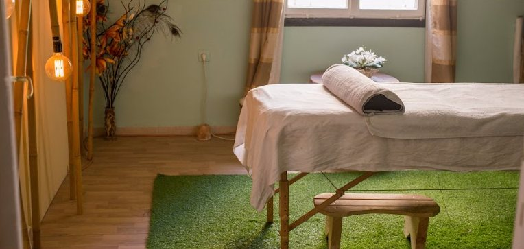
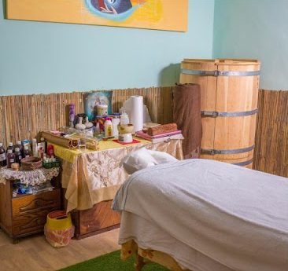
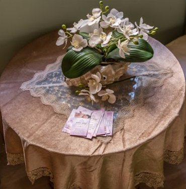
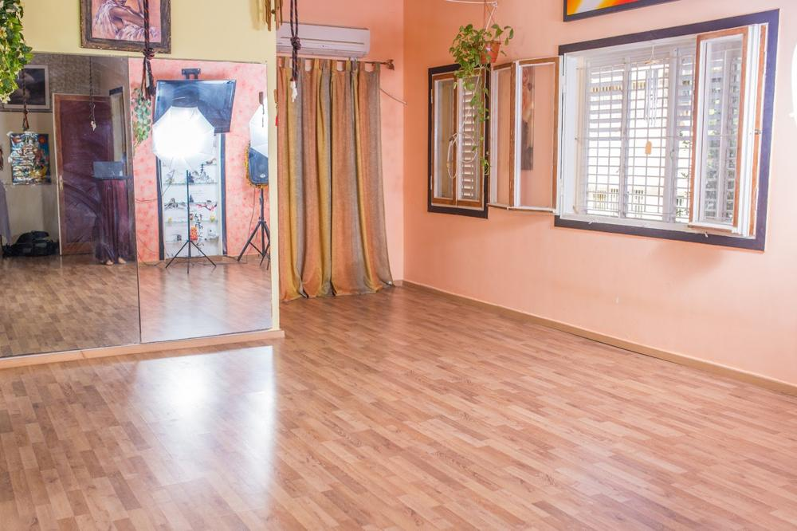
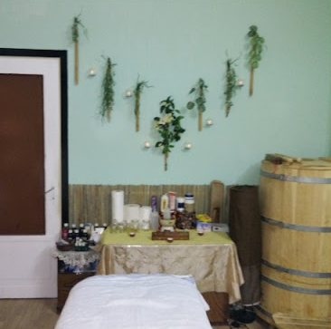
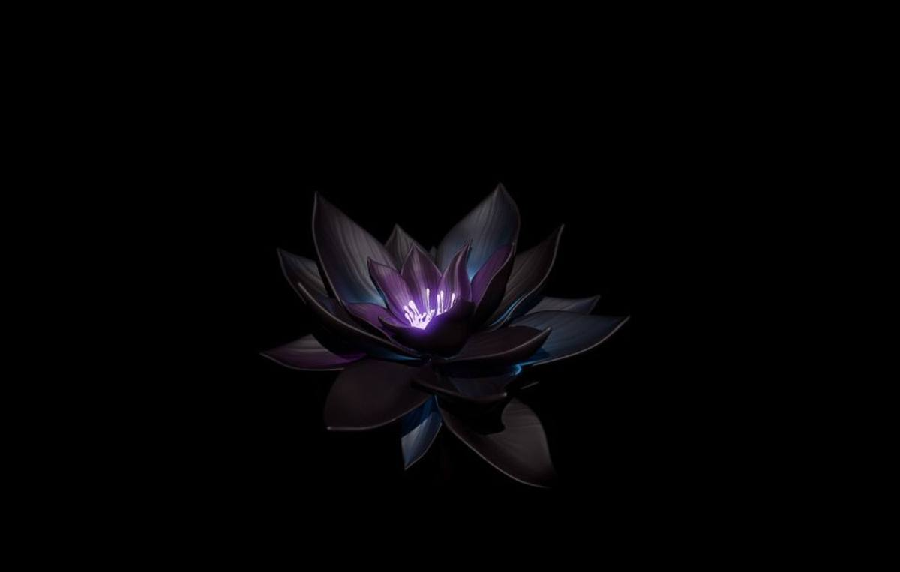

המקום באחד העם 3.The place at 3 Ahad Ha’am.
חדרי טיפול, סאונות וסטודיו, בכתובת אחת.Treatment rooms, saunas and a studio, at one address.
-

חדר הטיפוליםThe treatment room
מנורה חמה, שטיח ירוק ומגבת מגולגלת.A warm lamp, a green rug and a rolled towel.
-

פיטו סאונה וסאונה יבשהPhyto sauna and dry sauna
שתיהן במקום.Both on site.
-
מתיחות בפרובילוStretching on the Provilo
מכשיר כירופרקטי למתיחה עמוקה.A chiropractic device for deep stretching.
-

ספא לשנייםSpa for two
כל המקום רק שלכם.The whole place, just for the two of you.
-

הסטודיוThe studio
סדנאות וקורסים, וגם להשכרה.Workshops and courses, and it’s for rent too.
-
עיסוי עד הביתMassage at home
אפשר להזמין גם אליכם.You can also book one at your place.
-

אירועים ומוסדותEvents and organisations
עיסויים לאירועי עובדים, הרצאות וסדנאות.Massage for staff events, talks and workshops.

לפעמים זה מגע, לפעמים זה דיבור, לפעמים זה מבט, לפעמים זו מחשבה, לפעמים זו קרבה, ותמיד זו אהבה.Sometimes it’s touch, sometimes it’s talk, sometimes a look, sometimes a thought, sometimes closeness, and always it’s love.
4.8 בגוגל, מ-123 ביקורות.4.8 on Google, from 123 reviews.
״רכשתי חבילת טיפולים והתנסתי בארבעה סוגים שונים של טיפולים והיה פשוט מושלם!!! האווירה טובה ומרגיעה! המטפלים/ות מאוד מקצועיים! … עברתי מתיחות בפרבילו שהיה חוויה מטורפת.״“I bought a package and tried four different kinds of treatment, and it was simply perfect!!! The atmosphere is good and calming! The therapists are very professional! … I had stretching on the Provilo, which was a crazy experience.”
״מסאז׳ אחד המפנקים שהייתי בו, פשוט תענוג אמיתי. באתי עם גב תפוס ויצאתי משוחרר מכף רגל ועד ראש, תודה רבה.״“One of the most pampering massages I’ve had, a real pleasure. I came in with a stiff back and left loose from head to toe, thank you.”
״חוויה של פעם בחיים, העיסוי הנעים ביותר שחוויתי, במקום קסום בחיפה, הדלת נפתחת לעולם מיוחד … שעה של שקט ובריאות.״“A once-in-a-lifetime experience, the most pleasant massage I’ve had, in a magical place in Haifa; the door opens onto a special world … an hour of quiet and health.”
״עשיתי מסאז׳ ראש וטיפול פנים. היה מעולה, מומלץ ביותר.״“I had a head massage and a facial. It was excellent, highly recommended.”
לתאם טיפול.Book a treatment.
בוחרים, וההודעה לוואטסאפ נכתבת לבד.Choose, and the WhatsApp message writes itself.